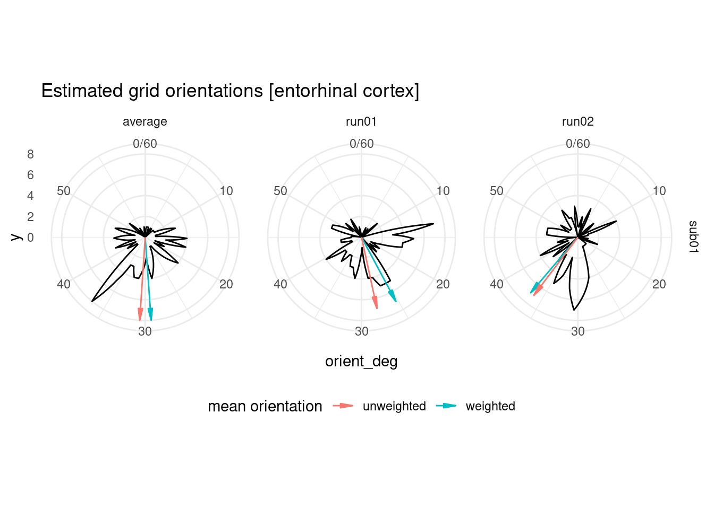

4 Estimate orientation
Based on the parameter estimates for the sine and cosine regressor we will now estimate the orientation of the n-fold symmetric signal. This estimated orientation then forms the basis for GLM2, where we look for signal modulations as a function of angular difference to the estimated orientation.
Typically, the orientation is averaged across runs and voxels in a region of interest such as the entorhinal cortex. This is also the approach we will implement here for now. A possible long-term goal is to use the voxelwise orientation for GLM2 for whole-brain/whole-surface analysis. However, I need to better understand how to implement voxelwise regression before I can do this.
4.1 Load PEs of parametric modulators
We begin by building a dataframe holding the parameter estimates (PEs) of the sine and cosine regressor for each subject, run and periodicity.
pmod_df <- tibble()
for (i_sub in subjects){
# load the right EC mask and linearize it
ec_mask_nii <- readNIfTI2(here("data", "masks", "ROI_masks",
"ROImask_entorhinalCortex_RH.nii"))
ec_mask_lin <- c(ec_mask_nii)
# load the combined brain mask and linearize it
brain_mask_nii <- readNIfTI2(here("data", "masks", "brain_mask", i_sub,
"comb_brain_mask_tMean100.nii.gz"))
brain_mask_lin <- as.logical(c(brain_mask_nii))
for (i_run in runs){
for (i_period in periodicities){
# load the sine and cosine parameter estimates
# sine and cosine regressors were the second/third regressors and are thus the
# third and fifth PEs in the output because of the temporal derivatives
sin_fn <- here("data", "glm1", "glm1_firsthalf", paste0(i_period, "fold"),
i_sub, i_run, "pe3.nii.gz")
cos_fn <- here("data", "glm1", "glm1_firsthalf", paste0(i_period, "fold"),
i_sub, i_run, "pe5.nii.gz")
sin_nii <- readNIfTI2(sin_fn)
cos_nii <- readNIfTI2(cos_fn)
curr_df <- tibble(subID = i_sub, run = i_run, periodicity = i_period,
sin = c(sin_nii)[brain_mask_lin],
cos = c(cos_nii)[brain_mask_lin],
ec = as.logical(ec_mask_lin[brain_mask_lin]),
vox_num = which(brain_mask_lin==1))
pmod_df <- rbind(pmod_df, curr_df)
}
}
}4.2 Compute Voxelwise Orientation
We can now compute the orientation for each voxel and periodicity. The resulting dataframe has orientation values in radians and in degrees. Note that these are in a range from 2*pi/periodicity and 360/periodicity, respectively.
orient_allvox <- pmod_df %>% mutate(
orient_rad = atan2(sin, cos), # estimate orientation in radians (range -pi to pi)
orient_rad = ifelse(orient_rad<0, orient_rad+(2*pi), orient_rad), # bring to range 0 to 2*pi
orient_rad = orient_rad/periodicity, # divide by periodicity because of n-fold symmetry
orient_deg = orient_rad * 180/pi, # convert to degrees
amplitude = sqrt((c(cos)*c(cos)) + (c(sin)*c(sin))) # calculate amplitude for later voxel weighting
)
head(orient_allvox)## # A tibble: 6 × 10
## subID run periodicity sin cos ec vox_num orient_rad orient_deg amplitude
## <chr> <chr> <dbl> <dbl> <dbl> <lgl> <int> <dbl> <dbl> <dbl>
## 1 sub01 run01 6 6.53 -2.83 FALSE 4802 0.330 18.9 7.12
## 2 sub01 run01 6 5.82 -2.89 FALSE 4803 0.339 19.4 6.50
## 3 sub01 run01 6 3.62 -2.45 FALSE 4804 0.361 20.7 4.37
## 4 sub01 run01 6 1.73 -1.73 FALSE 4805 0.393 22.5 2.45
## 5 sub01 run01 6 0.808 -1.25 FALSE 4807 0.428 24.5 1.49
## 6 sub01 run01 6 1.42 -1.16 FALSE 4808 0.376 21.5 1.83Because we have multiple runs, we might want to estimate a voxel’s orientation based on average across runs of the sine and cosine parameter estimates.
ori_df_avg <- orient_allvox %>%
group_by(subID, periodicity, vox_num) %>%
summarize(sin = mean(sin),
cos = mean(cos),
ec = unique(ec), .groups = "drop") %>%
add_column(run = "average", .after = "subID") %>%
mutate(
orient_rad = atan2(sin, cos), # estimate orientation in radians (range -pi to pi)
orient_rad = ifelse(orient_rad<0, orient_rad+(2*pi), orient_rad), # bring to range 0 to 2*pi
orient_rad = orient_rad/periodicity, # divide by periodicity because of n-fold symmetry
orient_deg = orient_rad * 180/pi, # convert to degrees
amplitude = sqrt((c(cos)*c(cos)) + (c(sin)*c(sin)))) # calculate amplitude for later voxel weighting
orient_allvox <- rbind(orient_allvox, ori_df_avg)4.3 Average grid orientations
To average the estimated orientations across voxels, let’s define a custom function. This is similar to the function in the GridCAT toolbox. It is written to be used with pipes, but probably this could be done more elegantly.
Usage:
- in_df is the input data frame with one row per voxel
- ori_values is the name of the column holding the voxelwise orientations
- x-fold is the periodicity of the signal you are looking at
- weighted is an option for an amplitude-weighted average of the orientation. If you want no weighted average, set it to FALSE
- in_deg is a logical for whether the orientation value columns is in degrees (TRUE) or radians (FALSE)
# custom function to average grid orientation across voxels, for usage see text above
calc_avg_ori <- function(in_df = NULL, ori_values = NULL, x_fold = "periodicity", weighted = FALSE, in_deg = TRUE){
# Input checking (pull variables from dataframe etc., could probably be more elegant)
ori_values <- in_df %>% pull(ori_values) # returns numeric vector of orientations
if(!is.numeric(x_fold)){ # make sure x_fold is one integer
x_fold <- in_df %>% pull(x_fold) %>% unique() # if it's a column, find the unique values
if(!length(x_fold == 1)){ # break if there is not one unique value
stop(sprintf(("Can't average over multiple periodicities! Length of x_fold is %d"),
length(x_fold)))}
}
if(weighted == FALSE){weighted <- 1} # if no weighting is desired, all weights = 1
else{weighted <- in_df %>% pull(weighted)} # else get numeric vector of weights
# Transform voxelwise orientations from range [0 360/xFoldSymmetry] to [0 360] degrees or [0 2*pi] radians,
# in order to enable calculation of subsequent trigonometric functions which expect this range.
ori_values360 <- ori_values * x_fold
# Transformation from polar to cartesian cordinate system (for weighting)
cart_df <- useful::pol2cart(r = weighted, theta = ori_values360, degrees = in_deg)
# find the mean across X and across Y separately
x_mean = mean(cart_df$x)
y_mean = mean(cart_df$y)
# Transformation back from cartesian to polar cordinate system
out_df <- cart2pol(x=x_mean, y=y_mean, degrees = in_deg)
# touch up the output a bit
if(in_deg){
out_df <- out_df %>% mutate(
avg_ori_deg = theta/x_fold,
avg_ori_rad = (theta*pi/180)/x_fold)
} else{
out_df <- out_df %>% mutate(
avg_ori_rad = theta/x_fold,
avg_ori_deg = (theta*180/pi)/x_fold)
}
# return the df after removing the angle in 360 deg space and the x and y coords
out_df <- out_df %>% select(-theta, -x, -y)
return(out_df)
}4.3.1 Wholebrain average orientation
Let’s first compute the average grid orientation across all voxels.
# weighted average orientation across voxels for each participant, run and periodicity
avg_orient_weighted <- orient_allvox %>%
group_by(subID, run, periodicity) %>%
do(calc_avg_ori(in_df = ., ori_values = "orient_deg",
x_fold = "periodicity", weighted = "amplitude", in_deg = TRUE)) %>%
ungroup() %>%
mutate(weighted = "weighted")
# unweighted average orientation across voxels for each participant, run and periodicity
avg_orient_unweighted <- orient_allvox %>%
group_by(subID, run, periodicity) %>%
do(calc_avg_ori(in_df = ., ori_values = "orient_deg",
x_fold = "periodicity", weighted = FALSE, in_deg = TRUE)) %>%
ungroup() %>%
mutate(weighted = "unweighted")
# bind the two together
avg_orient_allvox <- rbind(avg_orient_weighted, avg_orient_unweighted)
head(avg_orient_allvox)## # A tibble: 6 × 7
## subID run periodicity r avg_ori_deg avg_ori_rad weighted
## <chr> <chr> <dbl> <dbl> <dbl> <dbl> <chr>
## 1 sub01 average 6 0.285 28.8 0.502 weighted
## 2 sub01 run01 6 0.214 26.6 0.464 weighted
## 3 sub01 run02 6 0.364 30.1 0.525 weighted
## 4 sub01 average 6 0.287 29.4 0.513 unweighted
## 5 sub01 run01 6 0.143 28.6 0.499 unweighted
## 6 sub01 run02 6 0.284 29.8 0.520 unweightedTo get an overview of the estimated orientations, let’s plot them as a circular histogram for all brain voxels, together with the weighted and unweighted angular means.
# how many bins do we want for the polar histogram?
n_bins = 60
# add a variable with the maximum histogram count with the given number of bins
# this will be used later to determine the length of the arrow indicating the means
avg_orient_allvox <- inner_join(avg_orient_allvox, orient_allvox %>%
group_by(subID, run, periodicity) %>%
summarise(hcounts = max(hist(orient_deg, plot = FALSE,
breaks = n_bins)$counts),
.groups="drop"),
by = c("subID", "run", "periodicity"))
# make polar histogram across voxels and highlight (un)weighted mean orientations
ggplot(orient_allvox, aes(x=orient_deg)) +
coord_polar() +
scale_x_continuous(limits = c(0,60)) +
geom_freqpoly(bins = 60) +
facet_grid(subID ~ run) +
labs(title = "Estimated grid orientations [wholebrain]") +
geom_segment(data=avg_orient_allvox,
aes(x=avg_ori_deg,xend=avg_ori_deg, y=0, yend=hcounts,
group=weighted, color=weighted),
arrow=arrow(angle=10,type="closed",length=unit(0.3,"cm"))) +
labs(color = "mean orientation") +
theme_minimal() +
theme(legend.position = "bottom")## Warning: Removed 2 row(s) containing missing values (geom_path).4.3.2 Entorhinal Cortex average orientation
Because our first steps here will focus on the right EC (to check results against the GridCAT tutorial), let’s look at the orientations in that ROI.
# let's look at the EC voxels only
orient_ec <- orient_allvox %>%
filter(ec==TRUE)
head(orient_ec)## # A tibble: 6 × 10
## subID run periodicity sin cos ec vox_num orient_rad orient_deg amplitude
## <chr> <chr> <dbl> <dbl> <dbl> <lgl> <int> <dbl> <dbl> <dbl>
## 1 sub01 run01 6 -0.0603 -0.448 TRUE 98647 0.546 31.3 0.453
## 2 sub01 run01 6 0.113 -0.628 TRUE 98755 0.494 28.3 0.638
## 3 sub01 run01 6 0.108 -0.440 TRUE 98756 0.483 27.7 0.453
## 4 sub01 run01 6 0.214 -0.748 TRUE 98971 0.477 27.3 0.778
## 5 sub01 run01 6 0.416 -0.841 TRUE 98972 0.447 25.6 0.938
## 6 sub01 run01 6 0.0366 -0.550 TRUE 99079 0.513 29.4 0.551We first compute the average grid orientation across all EC voxels.
# weighted average orientation across voxels for each participant, run and periodicity
avg_orient_weighted <- orient_ec %>%
group_by(subID, run, periodicity) %>%
do(calc_avg_ori(in_df = ., ori_values = "orient_deg",
x_fold = "periodicity", weighted = "amplitude", in_deg = TRUE)) %>%
ungroup() %>%
mutate(weighted = "weighted")
# unweighted average orientation across voxels for each participant, run and periodicity
avg_orient_unweighted <- orient_ec %>%
group_by(subID, run, periodicity) %>%
do(calc_avg_ori(in_df = ., ori_values = "orient_deg",
x_fold = "periodicity", weighted = FALSE, in_deg = TRUE)) %>%
ungroup() %>%
mutate(weighted = "unweighted")
# bind the two together
avg_orient_ec <- rbind(avg_orient_weighted, avg_orient_unweighted)
head(avg_orient_ec)## # A tibble: 6 × 7
## subID run periodicity r avg_ori_deg avg_ori_rad weighted
## <chr> <chr> <dbl> <dbl> <dbl> <dbl> <chr>
## 1 sub01 average 6 0.220 29.3 0.512 weighted
## 2 sub01 run01 6 0.331 25.3 0.442 weighted
## 3 sub01 run02 6 0.193 36.7 0.641 weighted
## 4 sub01 average 6 0.348 30.6 0.535 unweighted
## 5 sub01 run01 6 0.363 28.0 0.488 unweighted
## 6 sub01 run02 6 0.291 36.2 0.632 unweightedTo get an overview of the estimated orientations, let’s plot them as a circular histogram for all entorhinal cortex voxels, together with the weighted and unweighted angular means.
# how many bins do we want for the polar histogram?
n_bins = 60
# add a variable with the maximum histogram count with the given number of bins
# this will be used later to determine the length of the arrow indicating the means
avg_orient_ec <- inner_join(avg_orient_ec,
orient_ec %>%
group_by(subID, run, periodicity) %>%
summarise(hcounts = max(hist(orient_deg, plot = FALSE,
breaks = n_bins)$counts),
.groups="drop"),
by = c("subID", "run", "periodicity"))
# make polar histogram across voxels and highlight (un)weighted mean orientations
ggplot(orient_ec, aes(x=orient_deg)) +
coord_polar() +
scale_x_continuous(limits = c(0,60)) +
geom_freqpoly(bins = 60) +
facet_grid(subID ~ run) +
labs(title = "Estimated grid orientations [entorhinal cortex]") +
geom_segment(data=avg_orient_ec,
aes(x=avg_ori_deg,xend=avg_ori_deg, y=0, yend=hcounts,
group=weighted, color=weighted),
arrow=arrow(angle=10,type="closed",length=unit(0.3,"cm"))) +
labs(color = "mean orientation") +
theme_minimal() +
theme(legend.position = "bottom")## Warning: Removed 2 row(s) containing missing values (geom_path).
4.4 Brain plot of estimated orientations
The computations above have been done for each voxel in the entire brain. To see how estimated orientations are distributed throughout the brain, let’s plot the orientation for each voxel. As our brain mask is not very precise, this is not a very good plot, but serves as a proof-of-principle.
# initialize a nifti object for the orientation values
orient_nii <- brain_mask_nii
# for the voxels in the brain mask, set the values to the orientation values based on the average across run
orient_nii[brain_mask_nii==1] <- orient_allvox %>%
filter(run=="average") %>%
pull(orient_deg)
# overlay of estimated orientation
ortho2(brain_mask_nii, orient_nii, xyz = c(46,46,15),
ycolorbar = TRUE,
col.y = oro.nifti::hotmetal(60),
ybreaks = seq(0,60,1))4.5 Store estimated grid orientation
Calculating GLM 2 requires one reference grid orientation. This could be one separate one per run, but for now, let’s go with the orientation resulting from the average across runs. We pick the amplitude-weighte values.
fn <- here("data", "glm1", "glm1_firsthalf", "avg_orient_ec.txt")
avg_orient_ec %>%
filter(run=="average", weighted == "weighted") %>%
select(-hcounts) %>%
write_delim(file = fn, delim = "\t", col_names = TRUE)